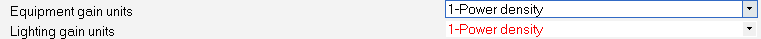

Ejemplo de scripts en Python – Calibración automatizada de un modelo con datos medidos
Este tutorial muestra cómo calibrar un modelo de DesignBuilder con datos mensuales de consumo de energía medido mediante las herramientas de scripts y optimización. Un script de Python calcula los índices estadísticos Cv(RMSE) y NMBE de la directriz ASHRAE 14 para cada simulación. Para ello, compara los resultados simulados del archivo SQLite de salida de EnergyPlus con un archivo CSV de datos medidos. Estos índices se utilizan como KPI personalizados (salidas de resumen) y como objetivos en un análisis de optimización que explora los valores de las entradas inciertas del modelo para hallar las combinaciones de parámetros que mejor reproducen los datos medidos. A continuación, los resultados se exploran de forma interactiva en la plataforma DesignBuilder Insights.
El tutorial incluye los siguientes pasos:
-
Configurar un modelo base sencillo totalmente eléctrico.
-
Preparar los datos medidos mensuales en un formato habitual de exportación CSV.
-
Crear salidas personalizadas (KPI) generadas por un script de Python.
-
Definir las variables de diseño para la calibración, incluidos los CoPs estacionales de los sistemas.
-
Leer los resultados de la simulación con la biblioteca db-eplusout-reader de Python y los atributos del modelo mediante la API de DesignBuilder.
-
Realizar una optimización multiobjetivo para minimizar el Cv(RMSE) y el valor absoluto del NMBE.
-
Explorar e interpretar los resultados en Insights.
Nota: Para este tutorial se necesitan los módulos de scripts y optimización. Las bibliotecas de Python db_eplusout_reader y eppy se incluyen con DesignBuilder, por lo que no es necesario instalarlas por separado.
La calibración de un modelo consiste en ajustar sus entradas inciertas para que los resultados simulados concuerden con los datos medidos dentro de las tolerancias estadísticas aceptadas. La directriz ASHRAE 14 define los dos índices que se utilizan aquí y considera calibrado un modelo con datos mensuales cuando Cv(RMSE) ≤ 15% y |NMBE| ≤ 5%. CIBSE TM63 describe un procedimiento de calibración equivalente con los mismos índices. Las fórmulas se presentan en el paso 6.
Paso 1 – Crear el modelo base
1. Crea un modelo nuevo situado en London Gatwick.
2. Añada un edificio con la configuración predeterminada y dibuje un bloque rectangular de 40 m × 20 m y 3.5 m de altura, como se muestra a continuación.

3. Subdivida el bloque en varias zonas como se indica a continuación. Las zonas de esquina orientadas al sureste y al suroeste tienen ambas una superficie de suelo de 10 m × 10 m. La distribución exacta apenas influye.

4. Abra el cuadro de diálogo Opciones del modelo y, en la pestaña Datos, dentro de Datos de ganancias, compruebe que Unidades de ganancias de equipos y Unidades de ganancias de iluminación estén ambas configuradas como 1-Densidad de potencia. Este ajuste es necesario para poder utilizar las variables de diseño Densidad de potencia de equipos y Densidad de potencia de iluminación general del paso 4.

5. En la pestaña Actividad a nivel de edificio:
-
Cargue la plantilla de actividad Zona de oficinas genérica (suele ser la plantilla predeterminada, así que probablemente pueda omitir este paso).
-
Seleccione el horario de ocupación 8:00 - 18:00 Lun - Vie que se encuentra en la categoría <General> del listado.

6. En la pestaña Huecos a nivel de edificio, active Protección solar de ventanas y seleccione la opción predeterminada Persiana con lamas de alta reflectividad si aún no está seleccionada.
7. En la pestaña Iluminación a nivel de edificio, cargue la plantilla de iluminación LED con control lineal .
8. En la pestaña HVAC a nivel de edificio:
-
Cargue la plantilla PTHP de HVAC.
-
Configure el tipo de ACS como 1-Igual que HVAC.

El edificio es ahora totalmente eléctrico. La bomba de calor compacta terminal cubre la calefacción, la refrigeración y el ACS. Esto importa para la calibración porque los datos medidos de este tutorial corresponden al consumo eléctrico de todo el edificio. En el paso 2 se explica cómo registra EnergyPlus estos usos finales en sus resultados sin procesar.
Paso 2 – Preparar los datos medidos
Para calibrar el modelo se necesitan datos de consumo de energía medido con los que comparar los resultados de la simulación. Para este tutorial se proporciona un archivo CSV con doce meses de consumo eléctrico medido del edificio.
1. Descargue el archivo de datos medidos: EnergyMeasured.csv
También puede copiar el texto siguiente en el Bloc de notas y guardarlo como EnergyMeasured.csv (en el cuadro de diálogo Guardar como, seleccione Todos los archivos en el campo Tipo y mantenga la codificación UTF-8 predeterminada):
Date/Time,Equipment,Lighting,Heating,Cooling,DHW,Total
,kWh,kWh,kWh,kWh,kWh,kWh
01/01/2024,2683,826,2801,0,125,6434
01/02/2024,2344,644,2507,1,108,5604
01/03/2024,2478,568,1442,9,114,4611
01/04/2024,2570,424,1112,180,119,4405
01/05/2024,2683,324,536,759,125,4426
01/06/2024,2365,318,212,874,108,3878
01/07/2024,2683,346,56,1734,125,4943
01/08/2024,2580,362,134,1424,119,4620
01/09/2024,2467,441,361,638,114,4020
01/10/2024,2683,621,969,187,125,4584
01/11/2024,2467,677,1492,7,114,4758
01/12/2024,2580,777,2777,0,119,6253
2. Guárdelo en una ubicación de su unidad local. Por ejemplo, C:\Calibration\EnergyMeasured.csv. Tenga en cuenta que debe introducir la ruta completa del archivo en el ajuste CSV_PATH del script de calibración en el paso 6
3. Abra el archivo y revise su estructura. Sigue el formato habitual de exportación de una compañía suministradora o de un sistema de gestión del edificio (BMS):
-
Fila 1: encabezados de columna.
-
Fila 2: unidades (kWh). El script debe omitir esta fila al leer los datos.
-
Filas 3 a14: valores mensuales de los doce meses del año.
-
Las columnas desglosan el consumo por uso final (electricidad de sala, iluminación, calefacción, refrigeración y ACS). La última columna, Total (electricidad) , indica el consumo eléctrico mensual de todo el edificio. Esta última columna es el objetivo de calibración. El script solo extrae sus datos y omite el resto.
Fecha/Hora
Equipos
kWh
Iluminación
kWh
Calefacción
kWh
Refrigeración
kWh
ACS (DHW)
kWh
Total
kWh
01/01/2024
2683
826
2801
0
125
6434
01/02/2024
2344
644
2507
1
108
5604
01/03/2024
2478
568
1442
9
114
4611
01/04/2024
2570
424
1112
180
119
4405
01/05/2024
2683
324
536
759
125
4426
01/06/2024
2365
318
212
874
108
3878
01/07/2024
2683
346
56
1734
125
4943
01/08/2024
2580
362
134
1424
119
4620
01/09/2024
2467
441
361
638
114
4020
01/10/2024
2683
621
969
187
125
4584
01/11/2024
2467
677
1492
7
114
4758
01/12/2024
2580
777
2777
0
119
6253
Datos medidos frente a los resultados sin procesar de EnergyPlus con HVAC Simple
Los datos medidos representan la electricidad suministrada en el contador, por lo que los valores de calefacción, refrigeración y ACS ya tienen en cuenta la eficiencia (CoP estacional) del sistema de bomba de calor. Los resultados sin procesar de EnergyPlus no la tienen en cuenta. Con HVAC Simple, EnergyPlus modela la calefacción y la refrigeración como sistemas centralizados ideales. En el archivo SQL de salida, los contadores de calefacción y refrigeración centralizadas registran la energía térmica entregada a las zonas, sin aplicar la eficiencia del sistema. Consulte Cuándo difieren los resultados de DesignBuilder de los resultados sin procesar de EnergyPlus
Como el tipo de ACS se configuró como 1-Igual que HVAC en el paso 1, la energía térmica para ACS también se incluye en el contador de calefacción centralizada. En el contador Electricity:Facility solo aparecen la iluminación y los equipos.
Cuando DesignBuilder muestra resultados de consumo de combustible, procesa estos resultados dividiendo la energía térmica por los CoP estacionales de la pestaña HVAC. Como el script lee directamente el archivo SQL sin procesar, debe reproducir este posprocesamiento:
Magnitud simulada
Contador SQL
Conversión a electricidad medida (kWh)
Calefacción + ACS
DistrictHeating:Facility (J)
÷ 3,600,000 ÷ CoP estacional de calefacción
Refrigeración
DistrictCooling:Facility (J)
÷ 3,600,000 ÷ CoP estacional de refrigeración
Iluminación + equipos
Electricity:Facility (J)
÷ 3,600,000
La suma de calefacción + ACS, refrigeración y calefacción + equipos da el consumo eléctrico mensual total simulado, que debe poder compararse directamente con la columna de datos medidos Total (electricidad).
Nota: DesignBuilder v2026.1 y versiones posteriores utilizan EnergyPlus v25.1, donde el contador de calefacción centralizada se denomina DistrictHeatingWater:Facility. En versiones anteriores de EnergyPlus, este contador se llamaba DistrictHeating:Facility. Del mismo modo, DistrictCoolingWater:Facility se llamaba DistrictCooling:Facility en versiones anteriores. Si necesita adaptar este tutorial a un motor anterior, modifique estos ajustes en el script. Si los resultados de calefacción o refrigeración están vacíos, compruebe los nombres de los contadores que se indican en el archivo eplusout.mtd de la carpeta de EnergyPlus.
Paso 3 – Ajustes del análisis y los objetivos
1. Abra el cuadro de diálogo Ajustes Paramétricos haciendo clic en el icono de la barra de herramientas y ajuste el Tipo de análisis en la pestaña Tipo de análisis a 2-Optimización.
2. Vaya a la pestaña Objetivos y configure dos objetivos, ambos con salidas de resumen de Script personalizado :
-
Minimizar el Cv(RMSE): Haga clic en el selector del KPI objetivo para abrir la lista de salidas de resumen disponibles en el panel de información. En principio, el KPI personalizado no aparecerá en la lista. Para crearlo, seleccione la salida de resumen Script personalizado de la lista, haga clic en el icono Crear una copia del objeto seleccionado de la barra de herramientas de información y edite la copia. Introduzca el nombre «Cv(RMSE) (%)».
Importante: El nombre introducido en el cuadro de diálogo de la salida de resumen debe coincidir exactamente con el nombre del registro correspondiente que escribe el script de calibración en el paso 5. Puede copiar el nombre y guardarlo en un lugar donde pueda consultarlo más adelante.
Guarde el KPI, selecciónelo como KPI objetivo, dé al objetivo el nombre «Minimizar el Cv(RMSE)» y configure Mín./Máx. como 1-Minimizar.
-
Minimizar el NMBE absoluto: Repita el procedimiento para crear una segunda salida de resumen de script personalizado llamada «Absolute NMBE (%)». Selecciónela, dé al objetivo el nombre «Minimizar el NMBE absoluto» y configure Mín./Máx. como 1-Minimizar.

3. En la pestaña Resultados adicionales , añada una tercera salida de resumen de script personalizado llamada «NMBE (%)» como resultado adicional. Su valor se registra junto con los resultados de cada iteración y queda fuera de los objetivos de optimización.
-
NMBE (%): Haga clic en el selector del KPI de salida para abrir la lista de salidas de resumen disponibles en el panel de información. En principio, el KPI personalizado no aparecerá en la lista. Para crearlo, seleccione la salida de resumen Script personalizado de la lista, haga clic en el icono Crear una copia del objeto seleccionado de la barra de herramientas de información y edite la copia. Introduzca el nombre «NMBE (%)».

Nota: ¿Por qué minimizar el NMBE absoluto y registrar también el NMBE con signo? El NMBE es una magnitud con signo. Los valores positivos indican que la simulación subestima el consumo medido. Los negativos indican que lo sobrestima. El optimizador necesita una magnitud para la que un valor menor siempre represente un mejor resultado. Por eso se minimiza el valor absoluto como objetivo. El valor con signo se conserva como resultado adicional, ya que indica la dirección del sesgo residual y ayuda a diagnosticar qué parámetros conviene ajustar.
Paso 4 – Ajustes de las variables de diseño
Vaya a la pestaña Variables de diseño y configure las 6 variables de diseño que se indican a continuación. Las 6 utilizan tipos de variables predefinidos con Objeto definido como Edificio. Los intervalos deben abarcar los valores plausibles de cada entrada incierta. Los valores indicados son adecuados para el conjunto de datos de ejemplo.
|
# |
Tipo de variable |
Mínimo |
Máximo |
Intervalo (optimización) |
|---|---|---|---|---|
|
1 |
Temperatura de consigna de calefacción (°C) |
20 |
24 |
0.5 |
|
2 |
Temperatura de consigna de refrigeración (°C) |
22 |
26 |
0.5 |
|
3 |
Densidad de potencia de equipos (W/m²) |
8 |
16 |
1 |
|
4 |
Densidad de potencia de iluminación general (W/m²) |
2.5 |
7.5 |
0.5 |
|
5 |
CoP estacional del sistema de calefacción |
1.5 |
3.5 |
0.25 |
|
6 |
CoP estacional del sistema de refrigeración |
2.0 |
4.0 |
0.25 |

Nota: Los intervalos de las consignas de calefacción y refrigeración se solapan deliberadamente (20–24 °C y 22–26 °C). Si la consigna de calefacción es igual o superior a la de refrigeración, la combinación es físicamente incoherente y la iteración fallará con un error de EnergyPlus. Las iteraciones fallidas se excluyen de los resultados y la optimización continúa, aunque la búsqueda pierde algo de eficiencia. Si prefiere evitar todas las iteraciones fallidas, reduzca los intervalos para que no se solapen, por ejemplo, calefacción de 20–22 °C y refrigeración de 23–26 °C.
Nota: Los tipos de variables predefinidos abarcan los atributos más habituales del modelo. Para modificar cualquier otro atributo, incluidos los horarios de ocupación, equipos e iluminación, puede utilizar el tipo de variable EMS personalizado, , IDF personalizado o Script personalizado , que aplican cambios al modelo mediante scripts y la API de DesignBuilder. Consulte la lista de variables y el tutorial de variables de script personalizado, que incluye los scripts asociados al evento on_design_variable_changed en Python y C#. Este tutorial utiliza seis variables predefinidas. El script EMS del paso 5 solo genera resultados.
Paso 5 – Añadir el script EMS que informa del CoP
En este paso se configura la generación de resultados necesaria para posprocesar los resultados de EnergyPlus con el script de calibración del paso 6. Este paso es independiente de la definición de las variables de diseño del paso 4. El script EMS y las variables no están vinculados.
Con HVAC Simple, los CoPs estacionales no afectan a los resultados sin procesar de EnergyPlus. Los contadores del archivo SQL registran la energía térmica y el CoP se aplica únicamente durante el posprocesamiento (véase el paso 2). Los valores aplicados por las variables de diseño no se pueden volver a leer desde el modelo mediante la API ni mantener en el estado de Python entre los eventos de ejecución de scripts. Por eso, el script EMS siguiente registra los CoPs aplicados en los resultados de EnergyPlus. Los atributos de CoP de las zonas se leen cuando se genera el IDF y se escriben como variables de salida de EMS. Así, cada simulación registra los valores de CoP con los que se ejecutó y el script de calibración del paso 6 los lee del archivo SQL como cualquier otro resultado.
1. Abra el Administrador de Scripts (mediante (Herramientas > Scripts o el icono Scripts de la barra de herramientas) y marque Habilitar scripts si aún está desmarcada.
2. Añada un script nuevo en la categoría EMS y llámelo «Report Average CoPs». Marque Habilitar programa en el cuadro de diálogo Editar script.
3. Copie y pegue el siguiente script EMS en la ventana del script.
! =====================================================================
! Report average heating & cooling COP across all qualifying zones,
! sourced from the model's SSEERFrac (cooling) / SCoPFrac (heating)
! attributes. Values are static model inputs, so the accumulation only
! needs to run once, at BeginNewEnvironment.
! =====================================================================
EnergyManagementSystem:GlobalVariable,
SumCoolingCOP,
CountCoolingZones,
AvgCoolingCOP,
SumHeatingCOP,
CountHeatingZones,
AvgHeatingCOP;
! --- Output variable definitions --------------------------------------
EnergyManagementSystem:OutputVariable,
Average Cooling COP, !- Name
AvgCoolingCOP, !- EMS Variable Name
Averaged, !- Type of Data in Variable
ZoneTimeStep, !- Update Frequency
, !- EMS Program or Subroutine Name (blank: global var)
[-]; !- Units
EnergyManagementSystem:OutputVariable,
Average Heating COP, !- Name
AvgHeatingCOP, !- EMS Variable Name
Averaged, !- Type of Data in Variable
ZoneTimeStep, !- Update Frequency
, !- EMS Program or Subroutine Name (blank: global var)
[-]; !- Units
! --- Program: accumulate across zones, then average, once -------------
EnergyManagementSystem:Program,
Set_Average_COP,
SET SumCoolingCOP = 0,
SET CountCoolingZones = 0,
SET SumHeatingCOP = 0,
SET CountHeatingZones = 0,
<ForAllZones>
<If LoopZoneAttribute ActiveCoolingOn = 1 Then>
SET SumCoolingCOP = SumCoolingCOP + <LoopZoneAttribute SSEERFrac>,
SET CountCoolingZones = CountCoolingZones + 1,
<Endif>
<If LoopZoneAttribute HeatingOn = 1 Then>
SET SumHeatingCOP = SumHeatingCOP + <LoopZoneAttribute SCoPFrac>,
SET CountHeatingZones = CountHeatingZones + 1,
<Endif>
<LoopNextZone>
IF CountCoolingZones > 0,
SET AvgCoolingCOP = SumCoolingCOP / CountCoolingZones,
ELSE,
SET AvgCoolingCOP = 0,
ENDIF,
IF CountHeatingZones > 0,
SET AvgHeatingCOP = SumHeatingCOP / CountHeatingZones,
ELSE,
SET AvgHeatingCOP = 0,
ENDIF;
EnergyManagementSystem:ProgramCallingManager,
Initialise Average COP Values,
BeginNewEnvironment,
Set_Average_COP;
! --- Reporting: monthly and run period ---------------------------------
Output:Variable,
*,
Average Cooling COP,
monthly;
Output:Variable,
*,
Average Cooling COP,
runperiod;
Output:Variable,
*,
Average Heating COP,
monthly;
Output:Variable,
*,
Average Heating COP,
runperiod;
Paso 6 – Añadir el script de calibración
Los índices estadísticos se definen según la directriz ASHRAE 14 de la siguiente forma:
NMBE (%) = Σ(mᵢ − sᵢ) / [ (n − p) × m̄ ] × 100
Cv(RMSE) (%) = √[ Σ(mᵢ − sᵢ)² / (n − p) ] / m̄ × 100
where mᵢ is the measured value for month i, sᵢ the corresponding simulated value, n the number of data points (12 for monthly data), m̄ the mean of the measured values, and p = 1 following the Guideline 14 convention. For monthly data, Guideline 14 considers a model calibrated when Cv(RMSE) ≤ 15% and |NMBE| ≤ 5%.
1. Haga clic en el icono Scripts de la barra de herramientas, habilite los scripts en la pestaña General y añada un nuevo script de Python llamado «Calibration KPIs».
2. Copie y pegue el script siguiente en la ventana del script. Si en el paso 2 guardó EnergyMeasured.csv en otra ubicación, edite la línea CSV_PATH de los ajustes de usuario al comienzo del script para que coincida exactamente con la ruta completa de su archivo.
from db_eplusout_reader import Variable, get_results
from db_eplusout_reader.constants import *
import csv
import ctypes
import os
# ----------------------------------------------------------------------
# User settings
# ----------------------------------------------------------------------
CSV_PATH = r"C:\Calibration\EnergyMeasured.csv" # measured data file
MEASURED_COLUMN = "Total" # calibration target column
J_TO_KWH = 3600000.0 # J to kWh conversion
P = 1 # ASHRAE Guideline 14 convention
# Ensure that SQLite outputs are generated
def before_energy_idf_generation():
site = api_environment.Site
for building in site.Buildings:
building.SetAttribute("SSSQLiteOP", "1")
def after_energy_simulation():
site = api_environment.Site
sql_path = os.path.join(api_environment.EnergyPlusFolder, "eplusout.sql")
# --- Simulated results: monthly facility meters from the SQL file (J),
# --- plus the applied seasonal CoPs reported by the EMS script (Step 5).
# Note: when simulating in EnergyPlus v23.1 and earlier:
# --- the DistrictHeatingWater:Facility meter must be renamed as "DistrictHeating:Facility"
# --- the DistrictCoolingWater:Facility meter must be renamed as "DistrictCooling:Facility"
heating = get_results(
sql_path,
variables=Variable(None, "DistrictHeatingWater:Facility", "J"),
frequency=M).first_array
heating_cop = get_results(
sql_path,
variables=Variable("EMS", "Average Heating COP", "-"),
frequency=RP).scalar
cooling = get_results(
sql_path,
variables=Variable(None, "DistrictCoolingWater:Facility", "J"),
frequency=M).first_array
cooling_cop = get_results(
sql_path,
variables=Variable("EMS", "Average Cooling COP", "-"),
frequency=RP).scalar
electricity = get_results(
sql_path,
variables=Variable(None, "Electricity:Facility", "J"),
frequency=M).first_array
heating_cop = float(heating_cop)
cooling_cop = float(cooling_cop)
# --- Measured data: read the target column from the CSV file ---
measured = []
with open(CSV_PATH, "r") as csvfile:
reader = csv.DictReader(csvfile)
next(reader) # skip the units row
for row in reader:
measured.append(float(row[MEASURED_COLUMN]))
if len(measured) != len(heating):
raise ValueError("Measured ({}) and simulated ({}) month counts differ."
.format(len(measured), len(heating)))
# --- Monthly residuals: measured minus simulated total electricity (kWh) ---
residuals = []
for dh, dc, el, msrd in zip(heating, cooling, electricity, measured):
sim_total = (dh / J_TO_KWH / heating_cop + # heating + DHW
dc / J_TO_KWH / cooling_cop + # cooling
el / J_TO_KWH) # lighting + equipment
residuals.append(msrd - sim_total)
# --- ASHRAE Guideline 14 statistics ---
n = len(measured)
mean_measured = sum(measured) / n
nmbe = sum(residuals) / ((n - P) * mean_measured) * 100.0
cv_rmse = ((sum(r ** 2 for r in residuals) / (n - P)) ** 0.5
/ mean_measured * 100.0)
# --- Write KPIs to the temporary results table ---
site.RemoveTable("ParamResultsTmp")
table = site.AddTable("ParamResultsTmp", 2)
record = table.AddRecord()
record[0] = "Cv(RMSE) (%)"
record[1] = str(cv_rmse)
record = table.AddRecord()
record[0] = "Absolute NMBE (%)"
record[1] = str(abs(nmbe))
record = table.AddRecord()
record[0] = "NMBE (%)"
record[1] = str(nmbe)
3. En resumen, el script funciona así:
-
El evento before_energy_idf_generation activa la salida SQLite para que los resultados estén disponibles en eplusout.sql.
-
Después de cada simulación, el evento after_energy_simulation lee los valores mensuales de los contadores del edificio para calefacción centralizada (incluye ACS), refrigeración centralizada y electricidad del archivo SQL, mediante la biblioteca db-eplusout-reader para leer los resultados.
-
Los CoPs estacionales aplicados se leen del mismo archivo SQL como las variables de salida EMS Average Heating COP y Average Cooling COP (frecuencia del periodo de simulación), generadas por el script EMS configurado en el paso 5.
-
Los totales mensuales medidos se leen del archivo CSV, omitiendo la fila de unidades, y se calculan los residuos mensuales (valor medido menos valor simulado).
-
Los estadísticos de la directriz 14 se escriben en la tabla temporal de resultados ParamResultsTmp del modelo. Los nombres de los registros deben coincidir exactamente con los nombres de las salidas de resumen definidos en el paso 3.
Consejo: Al adaptar el script para leer otras entradas del modelo, puede identificar los nombres de atributos como SCoPFrac (CoP estacional de calefacción) y SSEERFrac (CoP estacional de refrigeración) activando la opción del programa que muestra los nombres de atributos en la información emergente y pasando el puntero sobre la entrada correspondiente en la pestaña de datos del modelo. La lista completa de atributos también figura en la Guía de usuario de las herramientas de extensibilidad y de la API. Los nombres de atributos distinguen mayúsculas de minúsculas. Si GetAttribute devuelve la cadena «Unknown», compruebe la ortografía exacta y el uso de mayúsculas y minúsculas.
Paso 7 – Ejecutar las simulaciones
1. Ejecute primero una simulación anual del modelo base. Haga clic en la pestaña Simulación y pulse Actualizar. Compruebe que el periodo de simulación abarque todo el año (1 de enero – 31 de diciembre) y que estén activados los intervalos de resultados Mensual y RunPeriod . El script solicita resultados mensuales y fallará si no están disponibles.
2. Se recomienda comprobar el script «Calibration KPIs» en la simulación base antes de iniciar la optimización. Para mostrar los estadísticos calculados, puede añadir un cuadro de mensaje temporal en las últimas líneas de la función after_energy_simulation , con la misma sangría que el resto del cuerpo de la función. Para mayor claridad, las etiquetas mostradas coinciden con los nombres de las salidas de resumen. El texto del cuadro de mensaje no interviene en la correspondencia entre los nombres de los KPI:
# Temporary check - add as the last lines INSIDE after_energy_simulation()
ctypes.windll.user32.MessageBoxW(
0,
"Cv(RMSE) (%): {:.1f}\nAbsolute NMBE (%): {:.1f}\nNMBE (%): {:.1f}\n"
"Heating CoP: {:.2f}\nCooling CoP: {:.2f}".format(
cv_rmse, abs(nmbe), nmbe, heating_cop, cooling_cop),
"Calibration", 0)
Tras la simulación anual base debería aparecer un cuadro de diálogo similar al que se muestra a continuación.

Mostrar los valores de CoP también permite comprobar cómo se registran los resultados de EMS. En la simulación base deberían coincidir con los valores de la pestaña HVAC. Si se mantiene el cuadro de mensaje durante una optimización breve de prueba, deberían cambiar entre iteraciones. Así se confirma que los valores registrados por EMS y leídos del archivo SQL llegan al cálculo de los KPI. Quite el bloque antes de ejecutar la optimización completa.
Importante: Pegue este bloque al final del archivo del script con la sangría necesaria para mantenerlo dentro del ámbito de after_energy_simulation , ya que las variables cv_rmse y nmbe solo existen en ese ámbito.
Importante: Quite o comente todos los cuadros de mensaje antes de ejecutar la optimización. Cada cuadro detiene la ejecución y pausaría cada iteración. Una optimización puede incluir cientos de iteraciones.
3. Por lo general, los estadísticos del modelo base quedarán fuera de las tolerancias de la directriz 14. Este es el punto de partida que se busca mejorar con la calibración.
4. Vaya a la pestaña Optimización + I/S en la pantalla Simulación. El programa abrirá el cuadro de diálogo Ajustes Paramétricos. Pulse Aceptar para confirmar la configuración. Si el cuadro de diálogo de las opciones de cálculo de optimización no se abre automáticamente, haga clic en el icono Actualizar de la barra de herramientas para abrirlo. Los ajustes predeterminados suelen ser adecuados para este análisis. Si desea una mejor convergencia y dispone de tiempo, puede aumentar el tamaño de la población y el límite de generaciones. Pulse Iniciar.
5. Durante la optimización, cada iteración se representa con el Cv(RMSE) en un eje y el NMBE absoluto en el otro. Así se forma un frente de Pareto con las mejores soluciones de compromiso. Como los dos objetivos miden el ajuste al mismo conjunto de datos medidos, están fuertemente correlacionados. Por ello, es habitual que el frente converja hacia un grupo de soluciones bien calibradas, mientras que en una optimización de diseño típica suele aparecer una curva de Pareto más amplia.

Paso 8 – Explorar los resultados en Insights
La plataforma DesignBuilder Insights permite realizar un análisis interactivo y detallado de los resultados de estudios paramétricos, de sensibilidad y de optimización mediante diagramas de coordenadas paralelas, gráficos de burbujas y gráficos de líneas.
1. Una vez completada la optimización, haga clic en Exportar y cambie el ajuste Exportar a a 5-Insights. A continuación, pulse Aceptar. Cuando se le solicite, introduzca sus credenciales de la cuenta de Insights credenciales de Insights (nombre de usuario y contraseña). A continuación, configure las opciones de carga de Insights. Añada los resultados a un proyecto existente de Insights o cree uno nuevo, asigne un nombre al conjunto de resultados y pulse Aceptar para iniciar la carga. El procedimiento completo se describe en la ayuda Exportar resultados paramétricos a Insights . Si aún no tiene una cuenta de Insights, regístrese primero. Consulte la ayuda de la cuenta de Insights para saber cómo registrarse e iniciar sesión.
2. Inicie sesión en el sitio web de Insights, abra su proyecto y el conjunto de resultados cargado, y cambie el tipo de gráfico a Coordenadas paralelas. Coloree el eje mediante Cv(RMSE)(%). Utilice la herramienta de selección de intervalos para restringir los ejes a las tolerancias mensuales de la directriz 14: Cv(RMSE) ≤ 15% y NMBE absoluto ≤ 5%. Las líneas que quedan son las soluciones candidatas calibradas. Al recorrer los ejes de las variables, podrá ver qué combinaciones de consignas, densidades de potencia y CoPs permiten calibrar el modelo.

3. Use el resultado con signo NMBE (%) para comprobar la dirección del sesgo residual. Si los valores son positivos, la simulación subestima el consumo medido. Si son negativos, lo sobrestima.

4. Seleccione la mejor solución (menor Cv(RMSE) dentro de la tolerancia de NMBE) y aplique los valores de sus variables al modelo base para obtener el modelo calibrado.

Nota: La equifinalidad aparece porque calibrar seis parámetros con doce totales mensuales es un problema indeterminado. Varias combinaciones de parámetros pueden satisfacer por igual los criterios estadísticos. Los índices estadísticos indican el grado de ajuste, pero no confirman que cada dato de entrada sea correcto. Para obtener una calibración más significativa, fije los parámetros para los que disponga de datos fiables (medición desagregada, información de inspecciones o auditorías, datos de placa) y calibre solo los parámetros cuya incertidumbre persista. Consulte la directriz ASHRAE 14 y CIBSE TM63 para conocer la jerarquía de las fuentes de evidencia en la calibración.
Consejo: En este tutorial se calibra con una sola serie, el consumo eléctrico total mensual medido, por lo que los índices Cv(RMSE) y NMBE solo miden el ajuste de un resultado. El mismo procedimiento se puede ampliar a varios resultados. El archivo de datos medidos ya desglosa el consumo por uso final, y el script de calibración puede calcular registros adicionales de Cv(RMSE) y NMBE para otras series, como los distintos usos finales, y escribirlos en ParamResultsTmp junto con los tres existentes. Defina una salida de resumen de script personalizado que coincida con cada nombre de registro nuevo (como en el paso 3) e inclúyalas como resultados adicionales. Cada una aparecerá como un eje en el gráfico de coordenadas paralelas . Al seleccionar intervalos en varios indicadores de ajuste simultáneamente, se limita el problema de equifinalidad descrito en la nota anterior y se obtiene un modelo calibrado con mayor fundamento.